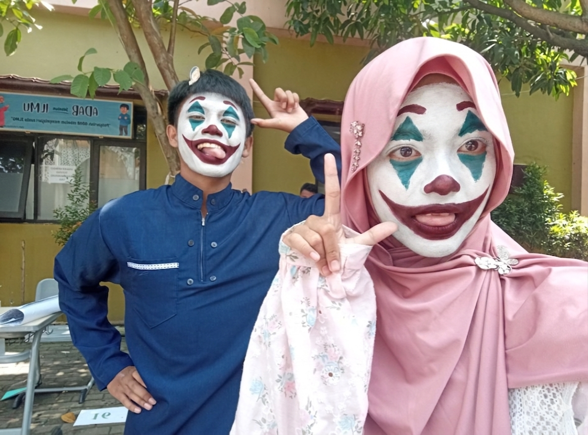

Ilma, aku beneran nggak pernah berniat bikin kamu marah, kesel, sedih atau yang lain. Kalau ada kata atau sikap aku yang salah, aku minta maaf ya.

Hii Ilma...
Aku cuma mau minta maaf soal hal yang hampir tiap hari sering aku lakuin ke kamu, soalnya tiap ngobrol aku pasti ngejekin kamu aku sadar kok itu bikin kamu jadi ga mut tapi cuma itu yang bisa aku lakuin biar ada topik biar tetep ngobrol.
Tapi mulai sekarang kalau aku ejekin kamu lagi pas ngobrol kamu tinggal buka aja web ini lagi nandain kalau sesering apapun aku ngejek kamu aku bakal tetep minta maap.
Aku juga ga bermaksud bikin kamu bete tiap ngobrol tapi cuma buat bercanda doang sekali lagi maapin aku kalo tiap bercanda ngejekin kamu, kamunya jadi bete
Aku harap kamu bisa maafin aku, dan semoga hubungan kita bisa tetap baik baik aja dan ga saling musuhan gara gara ngejekin doang.
😺👆 — Ajan